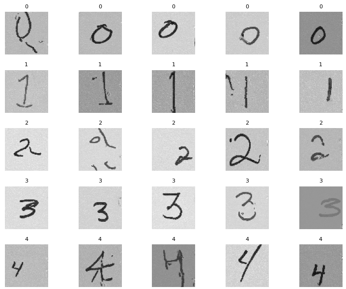

2025
Variational Network with Wavelet-based UNET in Accelerated MRI Reconstruction from Under-Sampled K-space Data
Undergraduate Thesis, 2024–2025
A multi-scale wavelet CNN integrated with a variational network for faster, higher-quality MRI reconstruction.